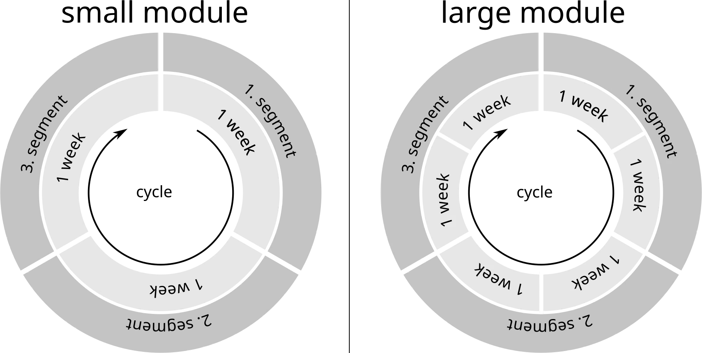

7. Education System
7.4 Level 2: Modules and Segments
With the start of Level 2, the modules become interesting and different. Until now, they were merely a term used to describe very long school lessons, interrupted by a lunch break. From Level 2 onward, modules open up the opportunity for children to choose what they want to learn, in what order, and how quickly.
Modules (except those of Level 1) have a very unfamiliar structure. They run over a fairly long period of time, but in cycles. Each cycle consists of three segments, and each segment lasts (depending on the module) either one week (small modules, e.g. “Nutrition”) or two weeks (large modules, e.g. “The Human Body”).
In each segment, the content of the entire module is covered. However, each segment has a different focus. In all areas that are not the focus of a given segment, reference is made to the corresponding chapters of the textbook for more in-depth information. Once the cycle has been completed with the third segment, it starts over from the beginning.

Since the same learning content is addressed multiple times (once in each segment), the repetition is used as an opportunity to draw connections to the other two focal areas.
Let’s take an example: We divide the module “The Human Body” into the three focal areas “Structure”, “Purpose”, and “Health”.
In each segment of the module, the entire human body is covered over the course of two weeks.
In the first segment, the main focus is on its structure: What does the human body consist of? What are its individual elements called, how are they connected to one another, how can I recognize them? The children observe their own bodies.
In the second segment, the main focus is on its purpose. What function do the elements of the body have, how do they fulfill it, why does our body work the way it does and not differently? The children carry out experiments (example: temperature perception of the skin).
In the third segment, the main focus is on health. How does the body heal itself? What happens when the body grows and ages? What can I do to keep my body healthy? How can I tell that something is not right?
Instead of “focus”, we can also call the individual segments “perspectives”. For each module, it must be newly determined how the material can be meaningfully divided into three focal areas or perspectives. There will always be different possible ways to divide it. What is important is that no focus may presuppose one of the other two: each one is, in itself, a complete view of the learning content. But the different perspectives complement one another and, taken together, result in a more secure understanding.
To explain this once more using our example module “The Human Body”: In the perspective “Structure”, it will also be stated what the circulatory system, a foot, or the stomach are used for. It will be stated what one must do to stay healthy. But the main focus lies on knowing what these body parts are called, where they are located, what they look like, and what parts they consist of. For details on function and health, this perspective refers to the textbook.
In the perspective “Purpose”, the circulatory system, foot, and stomach are named and shown. It will also be stated what one must do to stay healthy. But the main focus lies on understanding why we have these body parts, how they do their job, why they function the way they do and not differently. For details on structure and health, this perspective refers to the textbook.
In the perspective “Health”, the circulatory system, foot, and stomach are also named and shown. It will be stated what these body parts are good for. But the main focus lies on looking at how they change, what can go wrong, how one can recognize this, and what one can do to prevent it from happening and to stay healthy. For details on structure and function, this perspective refers to the textbook.
As can be seen: three different focal areas that present the same content to the students, each from a different perspective.
Even within a single perspective of a module, variety will be a high priority—to avoid overstraining the children’s concentration, promote different abilities, and open up various approaches to the topic for them.
Just as there are interdisciplinary topics in traditional school teaching, where, for example, Egypt is dealt with in mathematics, music, geography, and history alike, a module topic can likewise be used to practice very different skills.
Regardless of the specific content of a module: one can sing about it, calculate something, observe closely what something looks like and then draw it, research something independently and write about the result or present it to classmates, act out situations as theater scenes, work in groups to find prospective solutions to problems and then discuss them in class, play a game appropriate to the topic, craft or build something related to it, …
After each segment, students have the opportunity to take an understanding assessment for the module. If a student passes the assessment, it is completed for them, and they can enroll in modules that list this module as a prerequisite.
An understanding assessment has no grades; there is only “passed” or “not passed”. Similar to the modules of Level 1, this assessment is intended to clarify the following question: Did the student master the learning material well enough to have a basic understanding of it and to be able to apply it in everyday life? And did the student master it well enough that they will not encounter problems due to a lack of prior knowledge in modules that build upon it?
The understanding assessments are also an important change compared to the traditional school system in another respect: the teachers who taught the module have nothing to do with them!
In a traditional school, the teacher creates tests and exams, grades homework and presentations, and determines a grade for the subject for each student based on these. Only the final examinations are set and graded centrally in order to obtain comparable graduation certificates.
In my school system, the modules, by contrast, are defined centrally. It is specified which material is taught in them and what prior knowledge may be assumed in subsequent modules. Anyone who has successfully completed a module at one school should also be able to attend modules that build on it after changing schools!
Because this uniformity of module content is given, we can massively relieve teachers here. For the entire country, questions for the understanding assessments can be created centrally (of course always new ones, with enough variations that no one can simply memorize answers). And then there are employees whose job it is to correct the answers submitted by students and classify the assessment as passed or not passed. In this context, they will also give feedback to the teachers by summarizing how well the student group as a whole performed in certain subareas. Of course, teachers can review their students’ work if they want to understand how a result came about. But apart from the option of receiving feedback on their teaching, they do not have to invest any working time at all in the understanding assessments. This division of labor gives teachers more time for actual teaching, allows specialization and thus higher efficiency, creates nationwide comparability, and prevents corruption of teachers.
I believe that the requirement to present the learning material of each module through three different perspectives, focuses, or learning methods should in itself already lead to better curricula. It is not enough to define what one wants to convey. It must be clarified how it is conveyed. Which different approaches to a subject can be sensible. And different children will grasp the material best in different segments.
However, I have introduced this division of modules into cycles and segments due to four important organizational reasons.
1. Children can begin the module at different points in time. With small modules every week, with large modules every two weeks. After three segments (three or six weeks), they will then have learned the entire content of the module.
2. Students can learn the material of a module faster or more slowly.
Faster: A student does not have to wait until they have gone through all three segments. If they believe they already mastered the material well enough, they can take the assessment for the module after just two segments or, in extreme cases, even after only one. This is possible through talent, prior knowledge, or independent work with the textbook.
Slower: If a student does not pass the assessment after three segments, the module is not failed for them as a result: they can remain with the module and participate in the first segment a second time. They have already heard its material once, but now they are familiar with two additional perspectives on the same subject matter. Perhaps the combination of repetition and other viewpoints is enough for them to learn the material well enough now.
3. Students can interrupt learning the module and resume it later. Not only when a child misses school time, for example due to illness, is this flexibility a great advantage:
If they realize that the material is still too difficult for them or that they currently lack motivation for this topic, they can switch to another module at the end of the current segment. The time spent on this module is not lost as a result. They have already heard one perspective on this learning material. If they later begin the module again with one of the other two perspectives, these memories will be reactivated and help with understanding the material.
4. It massively reduces the amount of lesson preparation required of teachers. The same learning material of a large module that a teacher may teach up to six times in succession in one school year (112 hours of instruction per cycle—six weeks) would, in a traditional curriculum, be spread over two school years (2×45 minutes per week equals 58 hours per school year). In exchange, the teacher would have 12 different classes (or different subjects with the same class) that they teach every week. Even with parallel classes, they very frequently have to switch the topic they are currently teaching.
In modular teaching, by contrast, the teacher only has to prepare for a single area of knowledge each day and can usually draw on memories that are only a few weeks old of having taught the same thing. In addition, at any given time they have a single cohort of students, of which about one third changes every one or two weeks, instead of 12 classes in parallel. Together with the second teacher with whom they teach jointly, they can thus adapt instruction much more easily to individual students, since their number is manageable for them.
Each of the modules represents a self-contained body of knowledge. Later modules have other modules as prerequisites. But this does not mean that students have to remember every detail they learned there. It is completely sufficient that they have an overall understanding of the topic covered by the prerequisite module. And this was certified to the students by passing the understanding assessment. Specific details are repeated when they are needed.
An example: There is a module “Literature” at Level 4. This requires the module “Modern History” from Level 3. That does not mean that students have to remember every detail they learned in the history module. But the fact that all students in the “Literature” module already have an overview of modern history makes it possible in class to place literary works in their historical context.
Even though detailed knowledge from earlier modules is not required in subsequent modules, children can repeat the material of a module if they notice that they are missing it. Even after a child has already taken the understanding assessment, they are allowed to attend the module. This can, for example, make sense if the child realizes in a subsequent module that they have meanwhile completely forgotten these basics and therefore cannot follow the new material. Since each segment of the module covers the entire scope of the material, attending a single segment should be sufficient to refresh this knowledge.
And since the child has a concrete reason for the repetition—namely, to be able to understand subsequent material—this old material should be internalized much better through the review.
Structuring the learning material into modules, and modules into segments, is one of the central ideas of this school system design.
I have now mentioned several times that students can choose which module they would like to learn. How exactly does that work?
Before completing Level 1 (in the last two weeks of classes), the teachers discuss with each child which module they would like to start with in Level 2. If necessary, the parents can also be involved here.
For example, the first module could be “Road Safety and Cycling” if the parents have already practiced cycling with the child and it would like to be able to get to school independently as soon as possible. Or the child starts with the module “Everyday Mathematics” because they enjoy calculating. The first module should be an easy one for the child and one that they will enjoy.
In the last two weeks before the child completes Level 1, the learning material on dangerous and technical devices has already been completed. Instead, in the introductory lesson the child attends an introduction to the selected module with which they will then start Level 2 of the school.50
Between the foreign-language lesson and fitness, the children continue to have breakfast together with their class and their two teacher-advisors (who teach their class either in foreign language or fitness). But the lunch, which falls in the middle of the module instruction, changes. This meal is now taken together with the teachers of the new module and with the other children who are taking this module at the same time. These children can be from one of the parallel classes or even a year older. This is a good opportunity for the children to get to know their new classmates, with whom they will spend nearly four hours of lesson time every day for several weeks, and thus create new friendships. The teachers sitting at the same table with them once again ensure that no bullying occurs.
While the children in Level 2 are learning their first module, the introductory lesson at the end of the day is given a new goal: here, the children can choose (by signing up on a list with the teachers) which module they would like to attend an introduction for during this time slot. This introduction lasts one week for small modules and two weeks for large modules. Thus, an introduction spans 5×50 = 250 minutes (four hours) or double that length, eight hours. From Level 2 onward, the introductory lesson also takes place on Fridays, but it is optional on that day. The Friday lesson serves to review and reinforce the material and as an opportunity for the children to ask questions.
An introduction teaches the basic content of a module. It is meant to give the child initial knowledge and tools in this field. And even more importantly: it provides the child with a basis for deciding which modules to choose.
Just like the module introductions, the child may also choose all subsequent modules themselves (by signing up on a list with the teachers). However, they may only enroll in modules whose introduction they have already completed.
Each module is limited to a maximum of 24 students. Since enough modules are always offered simultaneously for the average group size in a module to be 20 students, each child always has a choice of several modules they can sign up for.
Just as in Level 1, the children do not have to stay focused for two hours straight. It is up to the teachers to liven up the lessons with games, relaxation exercises, short breaks in the classroom, and varied teaching methods so that the children can stay focused. This becomes easier as the levels increase (and the average age of the students), to the extent that the children get better at concentrating for longer periods.
In the appendix “Curriculum School Concept”, there is a draft of which modules with which contents each level could include (and from Level 3 onward, what prerequisites each module has).
Level 2 modules (in my curriculum draft): Computer Use, Drawing, Everyday Mathematics, Grammar, The Human Body, Local Studies, Logic, Motivation, Music, Nutrition, Planet Earth, Road Safety and Cycling, Swimming, Tool Basics
After completing Level 1, a child can start with any module from Level 2. None has prerequisites other than reading, writing, and basic arithmetic.
The level of difficulty of the modules for the children should roughly correspond to what a traditional school would expect of a third-grader—even though the children are just beginning their second school year. This is partly because the children will still be choosing from these modules in their third year, partly because the children can choose which of these modules they feel most confident about, and lastly because it is okay if children initially sometimes need more time for these modules than they will later.
Scope of Level 2 (in my draft curriculum): 20 segment weeks.
With an average of 3 segments per module (each student hears each perspective on the learning material once), that corresponds to 60 school weeks, i.e., about one and a half school years.
Starting at Level 2, a child has the opportunity to take up a hobby after the introductory time slot. This can be almost anything in which the child actively does something and develops a skill. The school recruits responsible adults for this, within the limits of available or procurable materials and facilities, who receive a modest stipend for their involvement.
Just like for modules, students may only participate in hobby sessions after they have attended an introduction for them. This introduction runs in the same time slot as the module introductions. Whether the introduction for a hobby lasts one or two weeks is decided by the responsible adult. For each week of hobby introduction, the student must have previously accumulated three weeks of module introductions.
Participation in a hobby is always voluntary (a student may, however, be excluded in case of problems). Students are free to change their hobby at any time or attend different hobbies on different weekdays. There are no assessments. But if a child is good at a hobby and focuses on one, then there will be performances or exhibitions, competitions, and social recognition.
Here is a (non-exhaustive) list of hobby categories:
• Choir
• an instrument
• a craft (painting, sculpture, glassblowing, blacksmithing, ...)
• a sport
• a martial art
• dance (in a specific dance style)
• theater
• a (different) foreign language
• ...
If the children do not speak English as their native language (and therefore have English as a foreign language from first grade onward), some of these hobbies will be offered in English.
If a student takes part in the hobby session, their school day does not end until 17:10.51 This adds a new afternoon snack break between the introduction and the hobby. During this break, the hobby instructors are responsible for food and drink (at the seating areas on the school grounds). Or the students spend the break freely on the school grounds (since this break takes place for all students at the same time, there is not enough space at the tables for all students at once).
In the second school year, there is a change in the morning fitness lesson. Once per week, each class in their second school year uses the swimming pool for exercises in the water and to learn how to swim.
The swimming pool is a one-time luxury investment by the school (there is only one, for all 1,000 students). To make this investment worthwhile, it is used as intensively as possible. And it is not just a simple swimming pool. Instead, it is embedded in a small wellness area. There are a few whirlpools, sauna rooms, a Kneipp bath, ...
This area is available to every student who has completed the Swimming module on one day of the week during the lunch break (students may choose their weekday freely so long as slots are available, but may only infrequently change it). Since lunch breaks take place in staggered shifts for half the school at a time, this reduces the amount of students allowed to use this area simultaneously to 90. Much more manageable than 900!
Utilization of the swimming pool (by the school): It is open to students before school begins between 7:00 and 8:00, is then occupied from 8:00 to 10:05 by fitness classes (one of grades 6–10 also uses it once per week), from 12:00 to 14:00 by children during the lunch break, from 15:10 to 16:00 by modules in the introduction time slot (Swimming and Lifesaving) and from 16:20 to 17:10 (hobby session) by hobbies. With a bit of creativity, some modules will surely find ideas for using it at the beginning or end of module time—as a reward or to try something out (I can imagine that quite well in the Motivation module, for example).
After 17:10 (and possibly before 7:00), as well as on weekends and during school holidays, the swimming pool including the wellness area can be accessible to the public and thereby replace municipal swimming pools. The same naturally also applies to the gymnasiums: in the evenings and on weekends they can be used for club sports, events, and so on. I consider it much more sensible to have these buildings, which are necessary anyway, on the school grounds—making them much more efficiently usable for the school—rather than having them located elsewhere in the city.
With our school’s year size of 100 students, a pair of teachers could easily cover even a large module on their own.52 That of course does not mean that the same pair of teachers teaches the same module all year long! For one thing, teachers will also be needed for other modules that they can teach. For another, it gives students more choice if they can learn the same material from different teachers. And lastly, it is also important variety for the teachers to not always teach just one unchanging module.